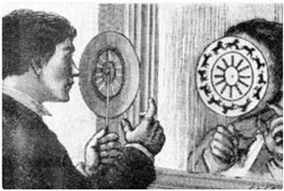
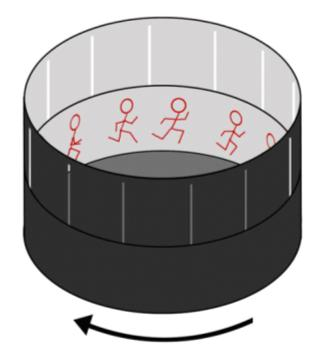
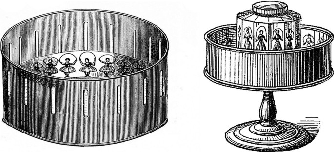

Back to Page 2
Animation is a rapid succession of still sequential images, shown at a steady rate that create the illusion of movement.
Pre cinema animation:
Phenakistiscope: a sequence of drawing is printed on a cardboard disk with narrow vertical slits between each frame. The viewer spins the disk while facing a mirror and looks at the reflection through the silts
Zoetrope: consists of a cylinder with silts. The viewer spins the disk and looks through the openings to view the animation.
Praxinoscope: a cylinder similar to Zoetrope, a faceted mirror has replaced the silts.
Filpbook: each image in the sequence is drawn on a separate page, illusion of movement created by flipping them rapidly
Types of animation:
2D Animation - each frame is created by hand
3D Animation - artists must create a 3D world on the computer , set characters must be built , lit, and painted in the way that sets are constructed for live action films.
Stop Motion - an animation technique in which a physically manipulated object appears to move on its own. The object is moved in small increments between individually photographed frames , creating the illusion of movement when the series of frames is played as a continuous sequence.
Uses of animation
Animation techincal terms
frame rate: number of frames projected per second
keyframe: frame in sequence of animation that defines the first or last frame in sequence
tweening: short for betweening
aspect ratio: proportions between the horizontal and vertical dimensions of a frame
pixel aspect ratio: proportions between the horizontal and vertical dimensions of a pixel in a video
Animation Workflow
Pre-production:
Production:
Post-prduction:
Storyboard
A storyboard is a series of images arranged in sequence prepared to visualize a project before the start of production
Animation Software: 2D
Example of my Animation Video:
Back to Page 1